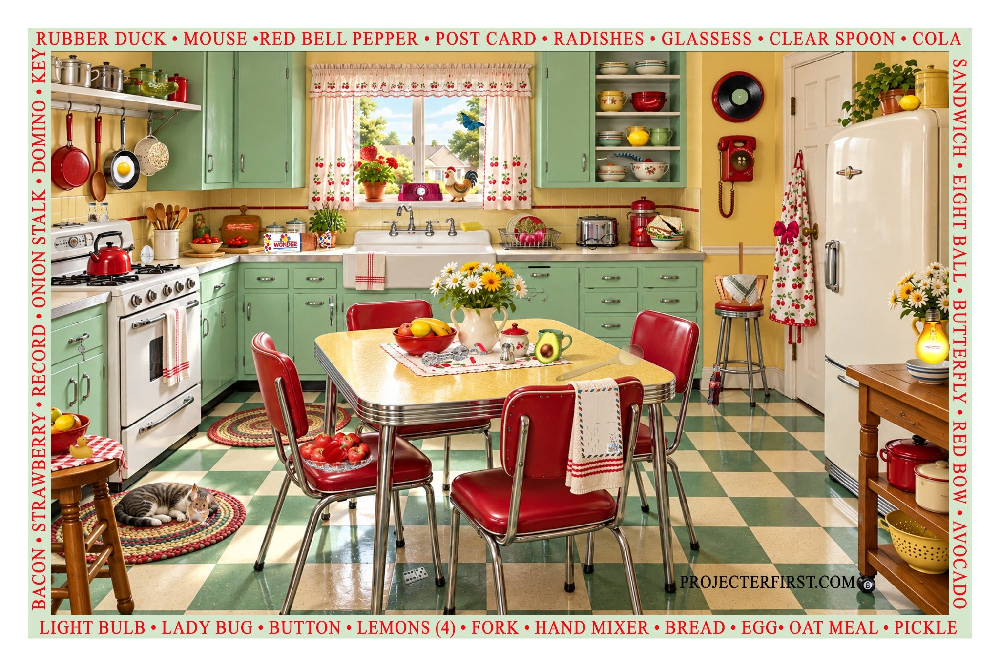
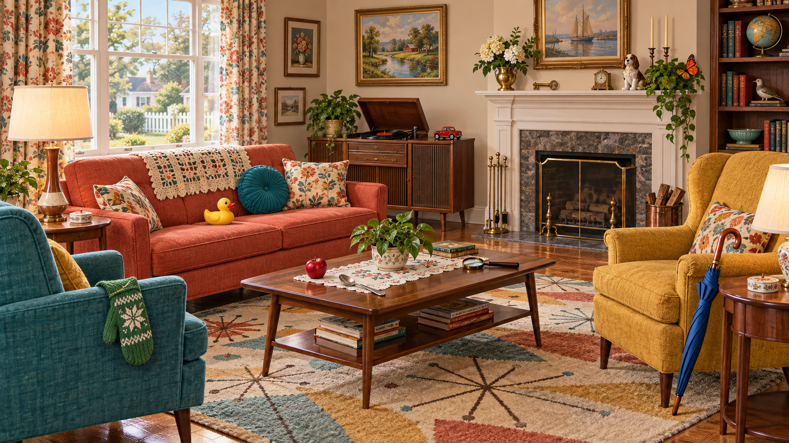
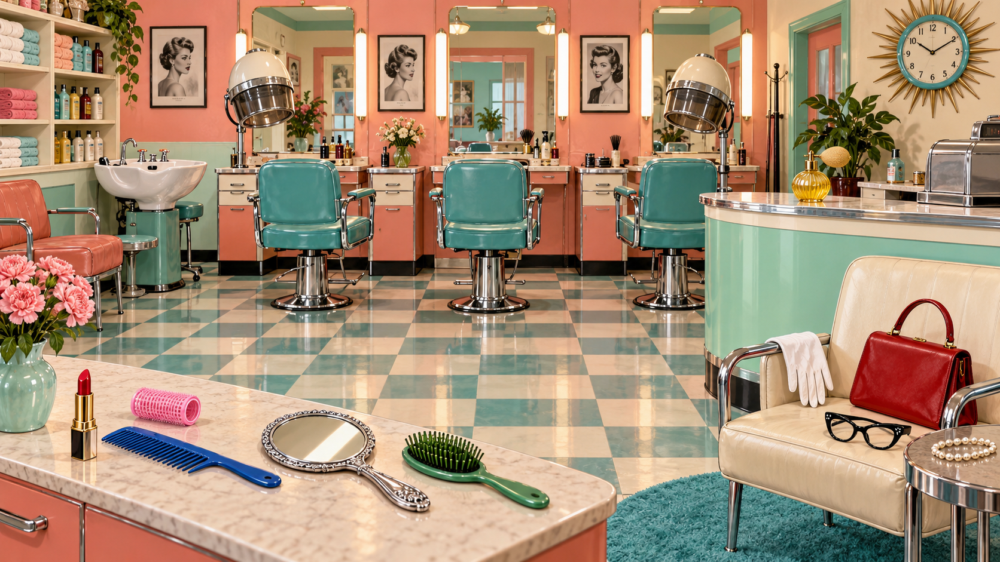
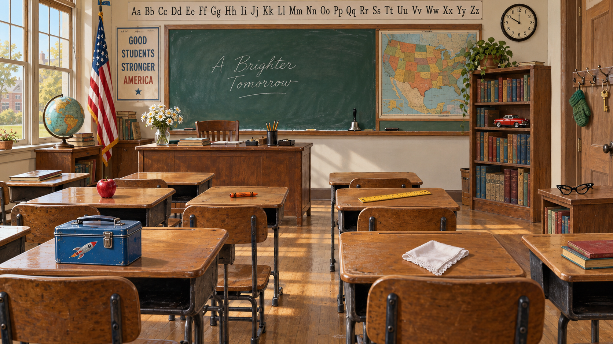
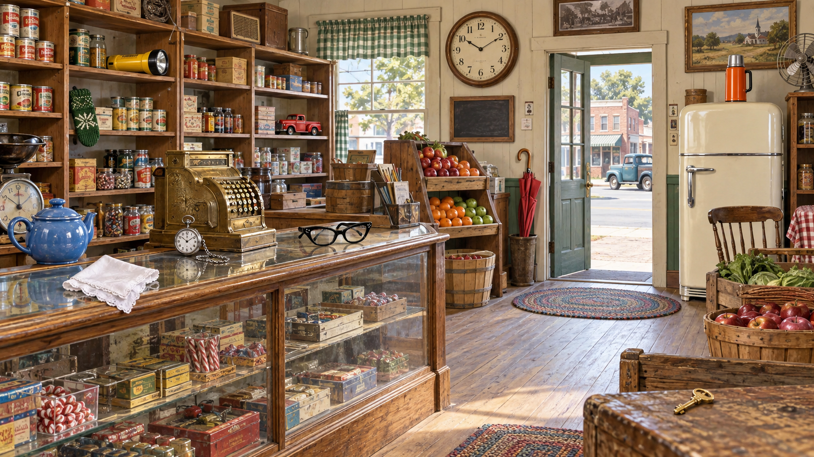

1950s Living Room
Explore a cozy original living room created for projector play.
Play Living Room I Spy
1950s Beauty Shop
Find ten familiar beauty-shop items in a bright vintage salon.
Play Beauty Shop I Spy
1950s Classroom
Scan the desks, chalkboard, shelves, and coat hooks for ten familiar objects.
Play Classroom I Spy
1950s General Store
Search the shelves, counter, doorway, and vintage displays for ten objects.
Play General Store I Spy